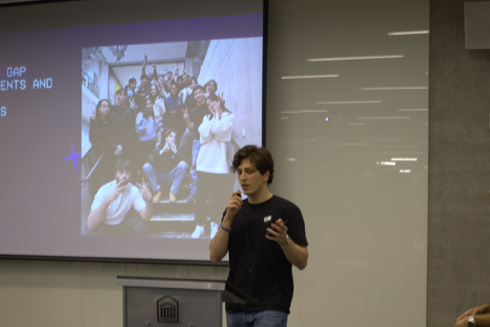

When I started my degree, my program had no student association. The Software Engineering Students' Association existed on paper but had been dormant since the pandemic, and a few earlier attempts to revive it hadn't stuck. When I stepped in there was no team and nothing to build on, just a couple of friends and me.
So we started from zero. We pulled together people who believed in the idea, convinced the Faculty of Engineering to give us an office, and began reaching out to companies willing to partner with us. The goal was simple: give software engineering students real value through connection, technical growth, and community.
Within a semester we'd grown to 27 members across marketing, design, development, academics, partnerships, and events. Over 300 students came to our events that first term. We were sponsored by Warp and the National Bank of Canada, ran a study session with Notion, and hosted workshops at cuHacking.

Leading it meant being a bit of a Swiss Army knife: onboarding sponsors, designing the logo and sponsorship package, helping build the website, keeping things running. But the part that mattered most wasn't any of that. It was learning to rally people around a shared vision and trusting the team to own their pieces. The best thing I built wasn't the org, it was the group of people who could carry it forward.
That's the real test of this kind of work: building something that outlasts you. I got to do it in my first year, but it was never a solo effort, and that's exactly the point.